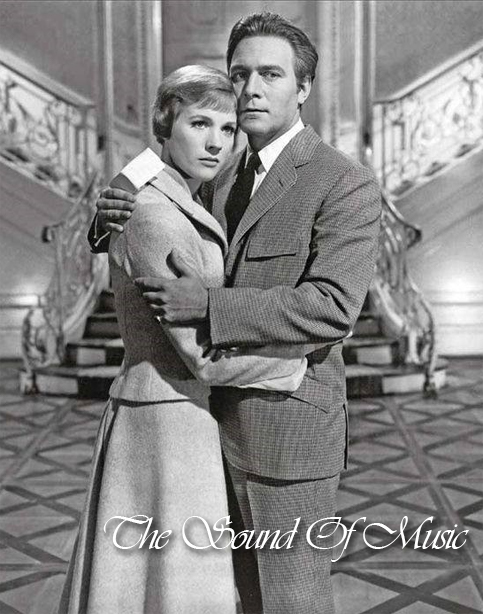

기획의도
요즘 그래픽의 발달로 CG가 가미된 화려한 블럭버스터 영화와 많은 영화효과로 제작된 대작이 넘쳐나고 있습니다.
하지만 이 영화는 그런 기술이 많이 들어간 영화는 아니지만, 그림같은 알프스의 배경과 아름다운 하모니와 멜로디를 감상할 수 있는 뮤지컬 영화의 고전 중 하나 입니다.
오래된 영화라 화면이 낡고 선명하진 않지만 최신 멋진 영화 속에 이 같은 정서와 따뜻함을 느끼게 한 영화가 있을까 하는 의미로 다시 들여다 보며 그 감성을 다시 느끼고자 시작 하였습니다.
줄거리
음악을 사랑하는 말괄량이 견습수녀 ‘마리아’는 원장수녀의 권유로 해군명문 집안 폰트랩가의 가정교사가 된다.
‘마리아’는 좀처럼 엄마를 잃고 마음의 문을 열지 않는 폰트랩 가의 일곱 아이들에게 노래를 가르치며 점차 교감하며 가까워지게 되고, 엄격한 ‘폰트랩 대령’ 역시 마음의 문을 열게 된다.
그러던 어느날, ‘마리아’는 자신이 ‘폰트랩 대령’을 사랑하고 있다는 사실을 깨닫게 되고, 자신만의 비밀을 간직한 채 아이들의 곁을 떠나 다시 수녀원에 들어가기로 결심 하는데...
감독

로버트 와이즈 Robert Wise
다른 작품
발 류튼: 그림자 속의 사나이 Val Lewton: The Man In The Shadows, 2007
스톰 인 썸머 A Storm In Summer, 2000
